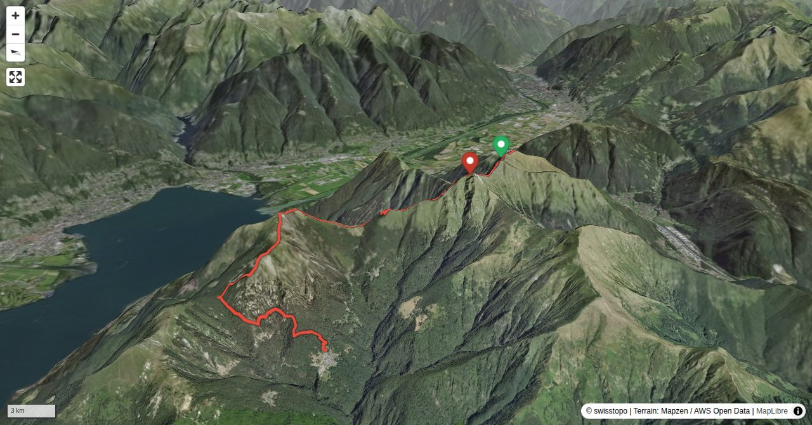

Until 2002 Monte Tamaro was a destination for skiers. 6 ski-lifts, a chair lift and a gondola were in operation, if there was snow. As most winters lacked snow all too often, the means of transportation were rarely operating. That was not profitable: no revenues, but expenses nevertheless. The lifts needed investment, and obtaining a concession costs a lot of money. Therefore, the Tamaro transportation company said goodbye to the unreliable winter weather and turned to summer activities. A fun park with a high-wire garden, toboggan run, playground with a frog pond, 400 m long flying fox, mountain bike infrastructure, launch pad for paragliders etc. was built. And even those interested in high culture were considered. Egidio Cattaneo, a Ticino entrepreneur who made money in the oil business and the former owner of the Tamaro transportation company, had a chapel built on Monte Tamaro in honour of his late wife. He assigned the project to his friend, the architect Mario Botta. The chapel Santa Maria degli Angeli is very special and deserves a visit. Even if you are not into sacral buildings, the form and location of this chapel will leave a lasting impression on you. Also, the second part of the tour and the endpoint are worthwhile. Monte Gambarogno is a first-class vantage point, and Indemini is one of the best-preserved mountain villages of Sottoceneri.
On Alpe Foppa do not miss to visit the famous church «Santa Maria degli Angeli» built by Mario Botta.
Quick Facts
| Summit elevation | 1955 m |
|---|---|
| Difficulty | SAC T3 Demanding mountain hiking with possible exposure and a real need for sure-footedness. Guide |
| Trailhead | Alpe Foppa (top station) |
| Region | Southern Alps |
| Canton | Ticino |
| Distance | 11.3 km (out-and-back) |
| Total ascent | ~767 m |
| Elevation range | 980-1955 m |
| Route sources | SAC Route Portal |
Photos

Planning
i
i
sac_scale (precise T1–T6) with
swissTLM3D Wanderwegart
fallback where OSM is silent (coarser T2/T3 and T4+ buckets).
Coverage: OSM 89.8% · swisstopo 9.3% · unknown 0.0%.Elevations computed from the inlined GPX track (SwissTopo height API).
Loading forecast…
Start: Alpe Foppa (top station) (1574 m)
End: Indemini, Paese (980 m)
3D Terrain View

Route Details
Monte Tamaro and Monte Gambarogno
- Alpe Foppa - Monte Tamaro 1 h 30 min. Monte Tamaro - Alpe di Neggia 45 min. Alpe di Neggia - Monte Gambarogno 45 min. Monte Gambarogno - Indemini 1 h 30 min.
Terrain & safety
On Monte Tamaro there are no technical difficulties. Shortly before the summit there are a few high steps in the rocks, and on the descent some slippery slabs need attention. On Monte Gambarogno the direct trail on the ridge is often overgrown and not always visible. On the descent from P. 1611 to Oratorio di Sant'Anna it is better to rely on one’s instinct than the faint path.
Source: SAC Route Portal
Field Reference
| Trailhead | Alpe Foppa (top station) | 46.11540, 8.89010 |
|---|---|---|
| Summit | Monte Tamaro (1955 m) | 46.10391, 8.86600 |
Coordinates are WGS84 decimal degrees (lat, lon). Emergency: 112 (general) or 1414 (Rega air rescue). Page URL: